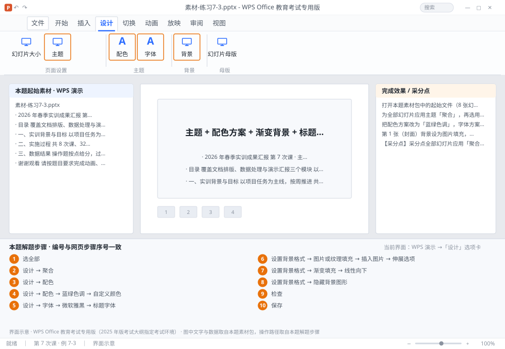

完成比对文档 · 例 7-3
主题 + 配色方案 + 渐变背景 + 标题页图片背景（拉伸） ｜ 第 7 次课 / WPS 演示 ｜ 网页：实操-演示1.html ｜ 考试环境：WPS Office 教育考试专用版（2025 年版考试大纲指定考试环境）
用途 本页按修订后的题目要求与解题步骤生成，是交卷自查的结果基准：
逐项列出每一步应出现的可复核结果，配合模拟操作截图与解题结果文件使用。
它不是素材包的一部分，不会预置答案动作；起始素材仍从本题素材包下载。
一、本题起始素材包
目录：练习素材/练习7-3-主题与背景/ ｜
下载包：练习素材/下载/练习7-3-主题与背景.zip
素材-练习7-3.pptx图1-封面背景.png素材说明.txt
二、题目要求
- 打开本题素材包中的起始文件（8 张幻灯片，无主题）。
- 为全部幻灯片应用主题「聚合」，再选用一种配色方案。
- 把配色方案改为「蓝绿色调」，字体方案改为「微软雅黑」。
- 第 1 张（封面）背景设为图片填充，图片按「拉伸」铺满。
- 第 2~8 张背景设为渐变填充（预设「线性向下」，两种蓝色）。
- 第 1 张勾选「隐藏背景图形」，去掉母版带来的装饰。
- 保存为 学号-姓名-练习7-3.pptx。
三、解题步骤（编号与下方核对表、截图编号一致）
- 选全部。在左侧缩略图区按 Ctrl+A（或点缩略图区后全选），确保主题应用范围是全部。
- 应用主题。「设计」→ 主题库 → 找到「聚合」→ 单击应用。
- 换配色。「设计」→「配色」→ 展开后选一种（不同配色主要改图表与形状的颜色深浅）。
- 改配色。「设计」→「配色」→ 选「蓝绿色调」（或「自定义颜色」逐个设）。
- 改字体。「设计」→「字体」→ 选「微软雅黑」。字体方案会同时改「标题字体」与「正文字体」，比逐页改快得多。
- 封面背景图片。只选中第 1 张 → 右键空白处 →「设置背景格式」→ 选「图片或纹理填充」→「插入图片」→ 选素材图 → 在「伸展选项」里选「拉伸」→ 不要点「全部应用」。
- 正文渐变背景。选中第 2~8 张 → 右键 →「设置背景格式」→「渐变填充」→ 预设渐变选「线性向下」→ 两个色标分别设为深蓝与浅蓝 → 角度 90°。
- 隐藏背景图形。回到第 1 张 →「设置背景格式」面板底部 → 勾选「隐藏背景图形」。这样母版上的装饰图形不会盖住照片。
- 检查。逐页翻看：封面是照片、正文是渐变、字体统一为雅黑。
- 保存。Ctrl+S 另存为 学号-姓名-练习7-3.pptx。
四、完成效果 / 采分点
采分点全部幻灯片应用「聚合」主题及配色方案 · 配色为蓝绿色调 · 字体方案为微软雅黑 · 第 1 张为图片填充且拉伸 · 第 2~8 张为线性向下渐变 · 第 1 张已隐藏背景图形
五、逐项完成核对表
| 步骤 | 关键操作路径 | 应出现的结果（可复核） |
|---|
| 1 | 选全部 | 选全部 |
| 2 | 应用主题 | 「设计」、「聚合」 |
| 3 | 换配色 | 「设计」、「配色」 |
| 4 | 改配色 | 「设计」、「配色」、「蓝绿色调」、「自定义颜色」 |
| 5 | 改字体 | 「设计」、「字体」、「微软雅黑」、「标题字体」、「正文字体」 |
| 6 | 封面背景图片 | 1 张、「设置背景格式」、「图片或纹理填充」、「插入图片」、「伸展选项」 |
| 7 | 正文渐变背景 | 8 张、「设置背景格式」、「渐变填充」、「线性向下」 |
| 8 | 隐藏背景图形 | 1 张、「设置背景格式」、「隐藏背景图形」 |
| 9 | 检查 | 检查 |
| 10 | 保存 | 学号-姓名-练习7-3.pptx |
六、模拟操作截图

界面示意 · WPS Office 教育考试专用版 · 橙色编号与本题解题步骤序号一致；
图中文字与数据取自本题素材包，功能入口取自本题解题步骤。
核对方法：按网页解题步骤完成并另存自己的成稿后，逐行比对本表第 3 列的
参数、公式、区域、文件名与对象数量；再对照网页「完成效果 / 采分点」检查版式是否一致。